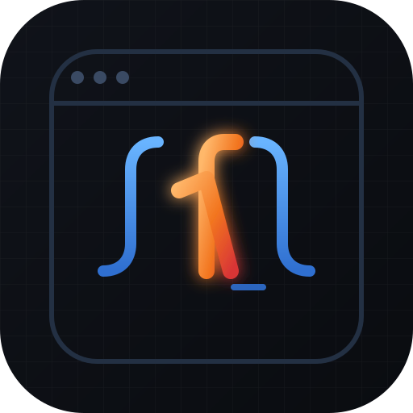
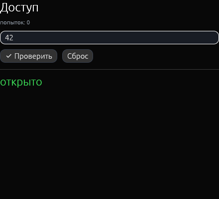

lazr
RAD for Rust that is friendly to AI. A screen is described by a model — line forms or
S-expressions — and lazr turns it into a real egui/eframe project and verifies it by running.
Rust stays the HAL: window, memory, pixels. A runtime can also execute the model live, without a rebuild.

Three steps, no mouse dragging
Lazarus gives a human a canvas. An agent needs a semantic way to change the interface and a verifiable result — so every edit is a named operation on the model.
Forms, not pixels
One line — one widget. Errors come back as data: line, code, hint. Types are checked before compilation.
Real Rust
Generation is deterministic: one model — one and the same text, so the output lives in git and diffs cleanly.
Three facts
verify = it builds + it renders headless + every button action is called and does not panic.
Speed, measured rather than promised
Measured on this machine, ordinary disk, warm shared build cache. The first egui build is 17 s; after that everything is milliseconds.
| model → code | 3 ms |
| code → built app | 751 ms |
| edit the model → rebuild | 410 ms |
| check the actions | 89 ms |
| the whole test suite | 18 ms |
Who it is for
Agents and operators
The UI is edited by commands and verified without a human:
verify prints the effect, not "ok".
Rust GUI developers
No ui.horizontal(|ui| {{ … }}) per layout row —
one model line instead of a block.
Internal tools
Dashboards, panels, forms, "an admin page in one evening" — no Electron, no npm.
Minimalists
One binary, zero dependencies in the tool, generation without network access.
One model, two syntaxes
Line forms are convenient for point edits; S-expressions are better when a program builds the model — no quoting or ordering traps, one form is one operation, and handlers are forms that can be evaluated.
window "Counter" 420x260 state count int 0 label "Clicks: {count}" {size:22, bold, color:#e5484d} button "Plus" do count += 1 {icon:play, key:ctrl+plus} place 400x200 button "Clear" anchor right bottom at 16 16 size 120x32
(window "Live model" 560 420) (theme dark :accent "#388bfd" :font 14) (state count int 0) (vbox (label "Clicks: {count}" :size 22 :bold true) (button "Plus" (set! count (+ count 1))) (slider "limit" :bind limit :range (1 20)))
Live runtime: the model is executed
One runtime is built once; then it reads the model and re-reads it when the file changes. Handlers are stored as forms and evaluated — not restated as strings — so editing the file changes the window with no recompilation.
Layout with numbers, theme in one line
place is a fixed-size area with absolute points, explicit sizes and right/bottom
anchors — a form, but in text. A theme is a single line: dark or light base, accent, font, spacing, radius.

Demos
Every demo is a model file, and every one is verified by scripts — not by eyeballs.
Paint
Eight tools, palette, undo, contour flood fill, save/open through a system dialog.
examples/paint.lispDashboard
Absolute layout: three cards, a journal, corner buttons, anchored hint.
examples/dashboard.lispBudget
Arithmetic in handlers: (set! total (* total 2)), a step slider.
examples/calc.lispSettings
Light theme, checkbox, slider, text input, reset via do.
examples/settings.lispAccess
String comparison and conditionally shown panels: when code == "42".
examples/gate.lispThermostat
Numbers and thresholds: "hot"/"normal" panels via when … else.
examples/thermostat.lispChecklist
Row template: {item}, its own "remove" button, seeded
items.
examples/checklist.lispTasks
A list of strings: append, remove,
clear, a text input and counters.
examples/todo.lispQuiz
Score and attempts counters, several handlers per row.
examples/quiz.lispLive model
The runtime showcase: edit the file, the window follows.
examples/live-demo.lispPackaging
One command puts a binary, an icon rendered from the logo, a .desktop entry and a
tarball into dist/. There is no installer and no signature — an honest boundary, not a forgotten
checkbox.
What is inside
Layout
vbox, hbox, grid N,
scroll, space and place with absolute points, sizes and anchors.
Style and theme
Size, weight, colour, padding, alignment, stretch; theme with a base, accent, font, spacing and radius.
Icons and shortcuts
A built-in set of safe glyphs (no tofu: arrows and
geometric shapes were dropped after a frame check) and :key "ctrl+s"-style shortcuts.
Custom widgets
rust widget + custom: arbitrary egui
code where the DSL ends — and it is still checked by the headless frame.
Action language
if, comparisons, arithmetic over fields,
increments; types are checked before cargo build.
Conditions
when … else shows children by a condition: number and
string comparisons, a bare boolean field. Type errors before the build.
Lists
A list field, seeded items, row templates
({item} plus its own "remove" button), three operations type-checked before the build.
Verification
verify, live --check,
live --problems, --trace and two GUI scripts that measure pixels and files.
Honestly, what is missing
Not done yet
- Lazarus-grade layout — absolute points and two anchors exist; percentages, Qt-style edge constraints and reflow on resize do not.
- CSS-grade styles — no custom font files, shadows or background images.
- Handlers beyond expressions — function calls and lists are missing: anything more moves into
rust widget, and then it is no longer the model. - Model history — git exists; built-in undo/branching of the model does not.
- Packaging — no installer and no signature: a signature needs keys, not a checkbox.
- Runtime parity —
customwidgets cannot work live (they are Rust code); the runtime honestly shows a placeholder saying a build is required.


when … else
{item} and its own button